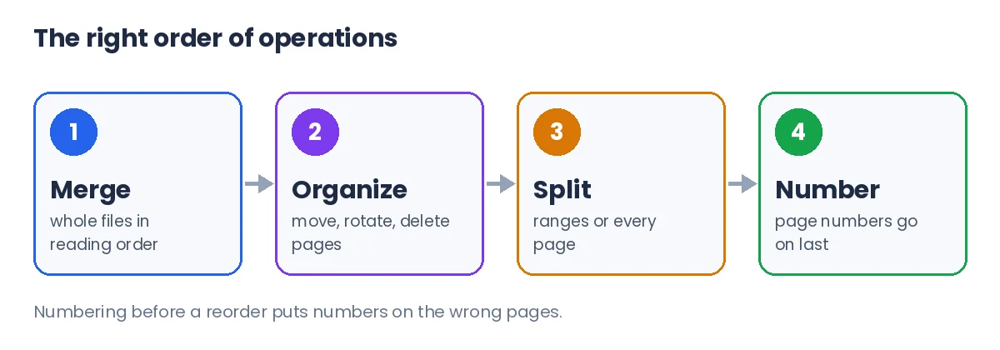
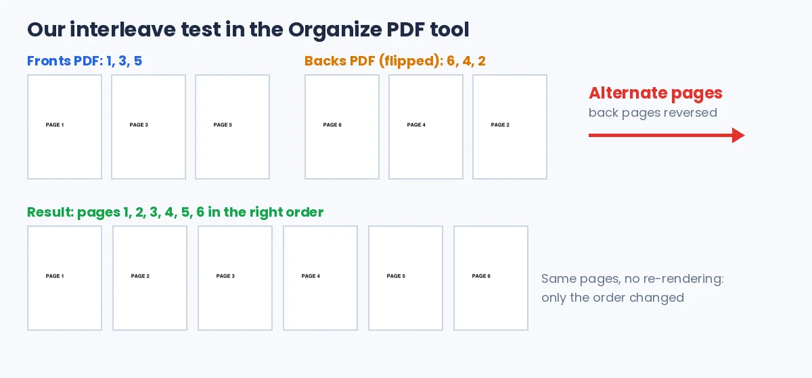

Merge/Split/Organize in Right Order: PDF Page Guide
To merge/split/organize in right order, set the file order before you merge and fix single pages in an organizer. Split only after checking page boundaries, and add page numbers last. Sort files by name with natural number order, then check the preview before you download.
Rearrange pages with the free Organize PDF tool. Your pages stay on your device.
How do you merge/split/organize in right order?
The right order of operations is merge first, organize second, split third and number last. Each step depends on the one before it, so doing them out of order means repeating work.
- Merge whole files in the order a reader needs them, such as cover letter, CV, then certificates.
- Organize single pages: move, rotate, delete or duplicate them.
- Split or extract the parts different people need.
- Add page numbers once the final arrangement is fixed.
Page numbers come last for a simple reason. i2PDF advises numbering after the final arrangement so the numbers match the finished document. A number stamped before a reorder ends up on the wrong page.

Merge, split or organize: which one do you need?
Merge works on whole files, organize works on single pages, and split cuts one file into parts. Picking the wrong one is the most common reason a simple job takes several tries.
| Job | Operation | PDFdukan tool |
|---|---|---|
| Join a CV, letter and certificates | Merge whole files | Merge PDF |
| Move page 9 before page 3, rotate a chart | Organize pages | Organize PDF |
| Send each invoice in a bundle separately | Split by ranges or every page | Extract PDF Pages |
| Remove blank or duplicate scan pages | Delete pages | Organize PDF or Delete Pages |
None of these operations needs selectable text. i2PDF notes that moving, rotating, splitting and merging work on scanned PDFs without OCR. OCR only matters when you need to search or copy the words.
Why do merged PDFs end up in the wrong order?
Merged PDFs usually end up in the wrong order because of how files were named or selected, not because the tool broke them. PDFwarp gives a classic example: plain alphabetical sorting puts "section-10.pdf" before "section-2.pdf".
We tested this in our Merge PDF tool with three files named section-1, section-2 and section-10. We added them in the order 10, 2, 1. The list kept that upload order, and Sort A–Z changed it to 1, 2, 10.
The merged file followed the list exactly: Section 1, Section 2, Section 10. Natural number sorting fixed the classic mistake. Still, the list on screen before you click Merge is what counts, so read it every time.
Naming files with leading zeros, such as 01, 02 and 10, avoids the problem in any tool. It also keeps folders on your computer in the right order.
How do you put double-sided scans back in order?
Double-sided pages scanned on a one-sided scanner need interleaving: front pages and back pages alternated into one file. A merge cannot do this, because merge only joins whole files end to end.
The usual routine is to scan all fronts, flip the stack and scan all backs. The backs then come out last-to-first. A three-sheet letter gives fronts 1, 3, 5 and backs 6, 4, 2.
The PDFdukan organizer now has an Alternate pages button for this. Add the fronts PDF, then the backs PDF, and choose "Back pages in reverse order". In our test, those two files became pages 1 to 6 in the correct order.

How do you split a PDF without breaking the order?
A PDF splits cleanly when you confirm where each section starts before you cut. Scanned bundles rarely have the same page count per document, so guessing a fixed size often cuts an invoice in half.
Our Extract PDF Pages tool offers four split methods: page ranges, one file per page, equal-size groups, or cut points you mark on the page previews. Ranges suit mixed bundles, and one file per page suits a stack of one-page receipts.
Splitting by target file size is less precise. i2PDF says size-based splits are estimates, because one complex page can exceed a small target. Check the parts before you send them.
Can you fix the page order after merging?
Yes, you can fix page order after merging by moving pages in an organizer instead of starting over. PDFwarp suggests reordering inside the file for small fixes and re-merging for big structural mistakes.
Reordering does not cost quality. We moved, rotated and deleted pages of a 4-page photo report in the organizer. Every remaining photo was byte-for-byte identical to the original, and the rotation was saved as a page setting.
A replaced page is a common small fix. If page 12 of a contract was rescanned, delete the old page, add the new file, and drag the new page into place.
Frequently Asked Questions
Does merge order change file size or quality?
Merge order does not change file size or quality. Order only changes the page sequence, and pages are copied without being re-rendered. A merged file is roughly the size of all inputs combined.
Does the order I select files in matter?
The selection order matters only as a starting point. The list shown right before you click Merge decides the final order. Drag or sort the list until it is right.
How do I merge/split/organize in right order for a job application?
Merge the cover letter, CV and certificates in reading order first. Then remove blank pages and rotate any sideways certificate. Check the preview, and split nothing unless a portal asks for separate files.
Can I organize scanned PDFs without OCR?
Yes, scanned PDFs can be reordered, rotated, split and merged without OCR. Those operations move whole pages. Run OCR only when you need searchable or copyable text.
Can I rotate just one page?
Yes, a single page can be rotated on its own. In the PDFdukan organizer, use the rotate buttons under that page. Other pages keep their orientation.
Are bookmarks kept when I merge?
Original bookmarks inside each file are usually lost in a merge, as PDFwarp also notes. PDFdukan's Merge PDF adds one new bookmark per source file instead. That lets readers jump between the merged documents.